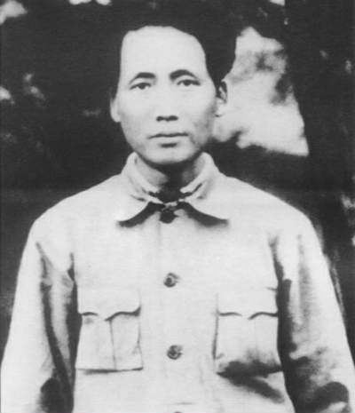
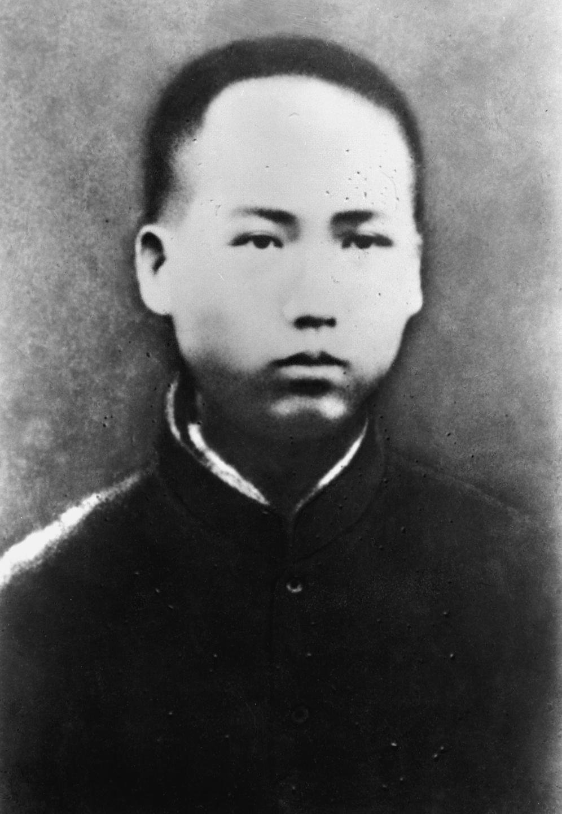
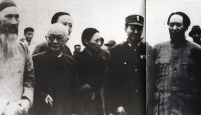
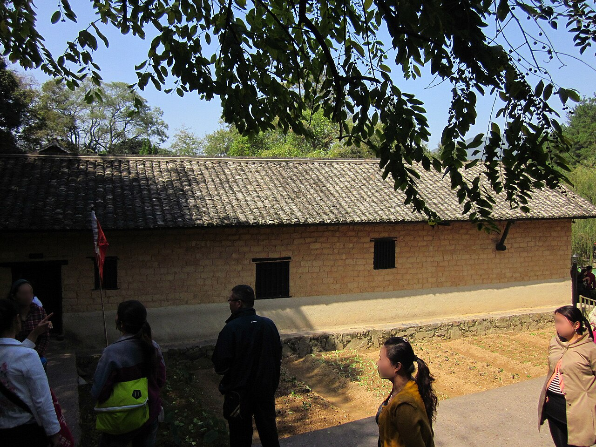

山河寄思，循着足迹读历史
从韶山出发，在历史中追寻足迹，在诗词中读懂山河。读一段故事，留一份怀念。

查看历史照片 ↓
山河AI · 带着问题读历史
围绕足迹、诗词和语录提问，依据本站资料继续阅读。
跟着足迹，读懂来路
点击年份或右侧条目，进入独立图文详情页。
按阶段阅读生平与足迹 ↓
生平阶段 · 与足迹一起读
十个阶段、十二个足迹节点，串起求学、革命、建设与诗词。

时间顺序示意，非地理地图。正文与照片均可在本站阅读，照片年代见图注。
毛主席诗词
从湘江秋色到北国风光，29首作品，读诗中的山河，也读写诗的年代。
独立寒秋，湘江北去，橘子洲头。毛泽东《沁园春·长沙》节选进入诗词馆 →
毛主席语录
按调查、学习和责任等主题，查阅30则节选的出处、时间与历史语境。
没有调查，没有发言权。毛泽东《反对本本主义》节选进入语录馆 →
影像里的毛泽东与生平足迹
从青年肖像到历史活动，再走进足迹旧址。精选12幅影像，每张保留年代、图注和署名。

青年毛泽东：1913年肖像
1913年春的青年肖像，可结合临近求学经历阅读，摄影者不详。
摄影者不详；维基共享资源收录 · 公有领域（原收录页标注，PD-China）查看大图与资料 →
青年毛泽东：1919年肖像
1919年的青年肖像，可与新民学会和《湘江评论》的资料一同阅读。
摄影者不详；原档案来源：中国共产党新闻；维基共享资源收录 · 公有领域（原收录页标注，Public Domain Mark）查看大图与资料 →
新民学会会员在长沙合影
新民学会部分会员在长沙周南女校合影。原图注记载毛泽东位于后排左四，摄影者不详。
摄影者不详；原档案引用新华网；维基共享资源收录 · 公有领域（原收录页标注，PD-China）查看大图与资料 →
1925年的毛泽东
原收录页标为1925年，说明通常认为是在广州拍摄的人物照；摄影者不详。
摄影者不详；维基共享资源收录 · 公有领域（原收录页标注，PD-China）查看大图与资料 →1931年的毛泽东
1931年人物肖像，摄影者及具体拍摄地点未见明确记载。
摄影者不详 · 公有领域（原收录页标注）查看大图与资料 →
征途岁月中的毛泽东
原收录页标为1937年，摄影者为埃德加·斯诺。
埃德加·斯诺 · CC0查看大图与资料 →
毛泽东在重庆机场与欢迎者合影
毛泽东赴重庆谈判时在机场与欢迎者合影，原图注列有张澜、邵力子、郭沫若、傅学文、张治中与毛泽东。
摄影者不详；原档案来源：人民网政协频道；维基共享资源收录 · 公有领域（原收录页标注，PD-China）查看大图与资料 →
1949年开国大典
1949年10月1日，毛泽东在开国大典上宣告中华人民共和国中央人民政府成立。
原摄影者未明确；维基共享资源由 Orihara1 上传 · 公有领域（原收录页标注，PD-China）查看大图与资料 →新中国成立初期的肖像
陈正青摄，新中国成立初期的人物肖像，非开国大典现场照片。
陈正青 · 公有领域（原收录页标注）查看大图与资料 →
毛泽东会见尼克松
毛泽东在北京会见美国总统尼克松。影像来自尼克松时期白宫照片集。
美国白宫摄影办公室（尼克松时期照片集）；美国国家档案馆藏 · 公有领域（原收录页标注）查看大图与资料 →
韶山毛泽东故居
现代拍摄的韶山故居实景，供地点阅读；并非1893年历史照片。
huangdan2060 · 公有领域（原收录页标注）查看大图与资料 →
遵义会议会址外观
现代拍摄的遵义会议会址外观，帮助了解阅读地点，非1935年会议现场照片。
N509FZ · CC BY-SA 4.0查看大图与资料 →人物肖像、活动记录与旧址实景分别标注；现代场景照片不作为历史事件现场影像。
三个历史专题
从延安的抗战讲演、战后的重庆谈判到北京的一次会见，了解事件的前因后果。
《论持久战》如何分析抗战
全面抗战开始后，国内对战争前景有不同判断。1938年5月至6月，毛泽东在延安抗日战争研究会作《论持久战》讲演，分析中日双方的优势与制约，回应中国会迅速失败或很快取胜的两种说法。
讲演讨论了战略防御、战略相持、战略反攻三个阶段。读到这里，可以留意作者如何把军力、国土和动员能力放在一起分析，并据此判断战局会怎样变化。
阅读讲演背景与版本沿革 ↗抗战胜利后的重庆谈判
日本宣布投降后，中国面临如何安排战后政治秩序的问题。8月28日，毛泽东、周恩来、王若飞从延安前往重庆，与国民党方面展开谈判。10月10日，双方代表签署后来被称为《双十协定》的会谈纪要。
谈判涉及和平建国、政治协商以及军队等问题。一些议题形成了书面共识，军队和解放区等关键分歧仍待解决。读会谈史料时，可区分已经达成的约定与留待后续处理的争议。
阅读重庆谈判史料 ↗一次会见与《上海公报》
1972年2月21日，美国总统尼克松抵达北京并会见毛泽东。双方谈及中美关系和国际局势。访问期间，周恩来与尼克松继续举行会谈，两国随后发表《上海公报》，各自陈述立场，并提出改善交往的方向。
这次访问推动了中美关系走向正常化，正式建交发生于1979年。将会见照片、公报文本与建交时间对照阅读，可以看清三个环节之间的关系。
阅读《上海公报》摘录 ↗ 查看访问与建交背景 ↗